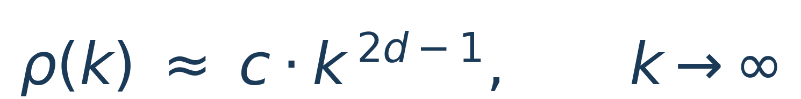
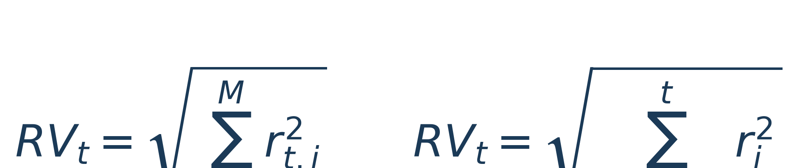
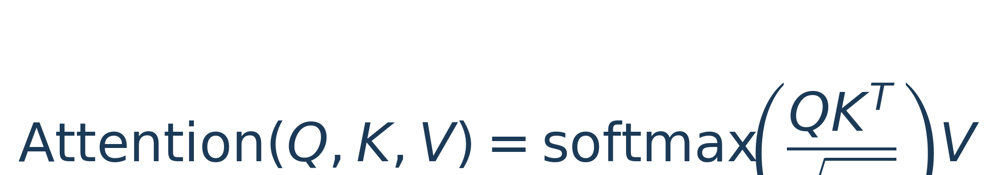
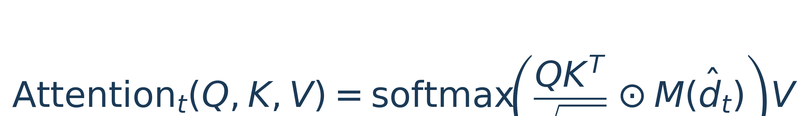
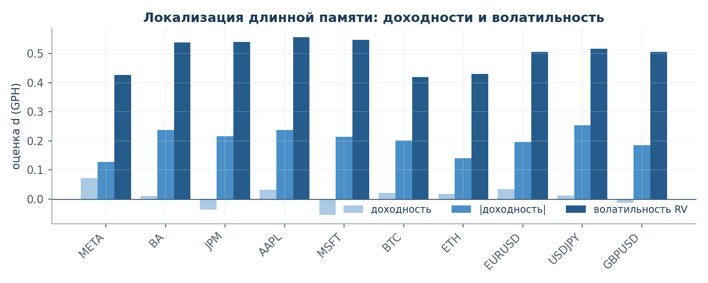
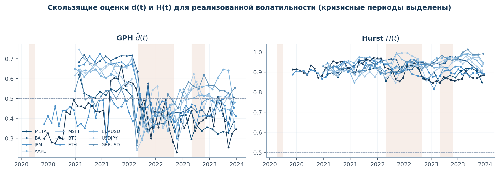
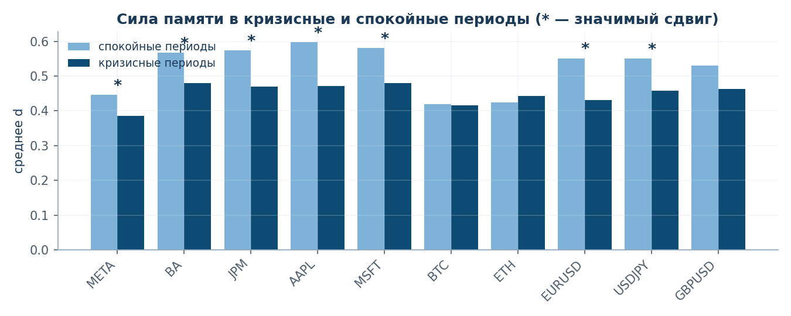
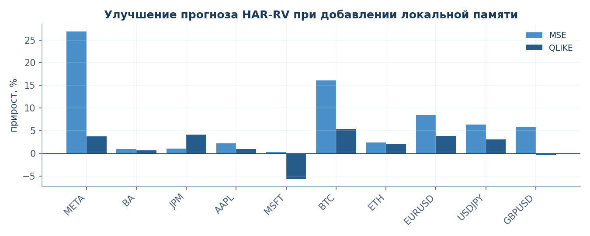
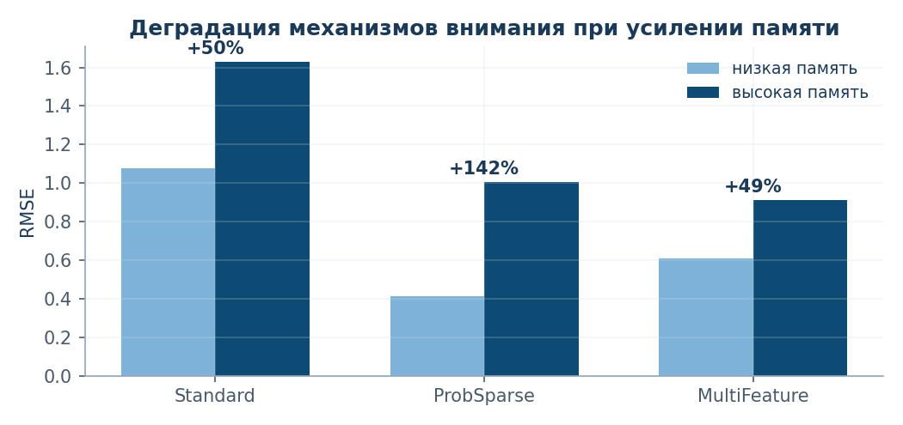

О работе
Волатильность — мера колебаний цены — лежит в основе оценки рыночного риска (VaR, ES), резервирования капитала и ценообразования производных инструментов. Инструменты, способные её прогнозировать, — это и есть информационные технологии финансового анализа.
Особенность волатильности — длинная память: автокорреляции затухают по степенному закону, поэтому влияние прошлого сохраняется на больших горизонтах. При этом сила памяти не постоянна — она меняется от режима к режиму и схлопывается в кризисы.
Цель — разработать и обосновать архитектуру трансформера с адаптивным механизмом долгосрочной памяти (Memory-Adaptive Attention) для повышения точности прогноза волатильности и качества оценки рыночного риска.
Локализация памяти
Длинная память сосредоточена не в ценах и доходностях, а в волатильности: для реализованной волатильности d ∈ [0,42; 0,56] и H ≈ 0,90–0,95, тогда как для доходностей d ≈ 0.
Нестационарность
Скользящая оценка памяти и CUSUM-тест: структурные сдвиги у 7 из 10 активов, в кризисные периоды среднее d падает с 0,52 до 0,45.
Прогностическая ценность
Добавление признаков d̂_t и Δd̂_t к HAR-RV улучшает прогноз по MSE для всех 10 активов (+7,1 %) и по QLIKE для 8 из 10 (+1,8 %).
Следствие для внимания
Статичные схемы внимания деградируют при смене режима (ProbSparse: RMSE +143 %) — отсюда адаптивный механизм, управляемый локальной силой памяти.
Актуальность
Волатильность прогнозируется на всех горизонтах риск-менеджмента, а её структура меняется от режима к режиму.
Объект
Финансовые временные ряды и ряды реализованной волатильности с долгосрочной памятью.
Предмет
Статистические и нейросетевые технологии моделирования волатильности, адаптированные к изменяющейся памяти.
Методы
Анализ литературы, статистическое тестирование, моделирование, машинное обучение, сравнительный анализ.
Методы
R/S-анализ Хёрста
Оценка показателя H по нормированному размаху в двойных логарифмических координатах.
Метод GPH
Полупараметрическая оценка d регрессией логарифма периодограммы по низким частотам.
Тест Ло
Модификация R/S с ядром Ньюи–Уэста: устойчивость к краткосрочной зависимости.
CUSUM-тест
Обнаружение структурных сдвигов в траектории локальной памяти d(t).

(1) Степенное затухание автокорреляций при длинной памяти; d = H − 1/2
(2) Реализованная волатильность по внутридневным доходностямСамовнимание как обучаемая автокорреляционная функция
Механизм самовнимания для каждой позиции вычисляет веса значимости всех остальных позиций независимо от временного расстояния — то есть строит обучаемую нелинейную автокорреляционную функцию. В многоголовом внимании разные головы специализируются на своих типах зависимостей.

(3) Механизм самовнимания трансформераКарты внимания четырёх голов
Высота столбца — вес внимания по лагу прошлого.
Голова 2 реагирует на d: чем выше d, тем шире распределение весов — так адаптивная схема внимания «догоняет» память процесса.
От статичного к адаптивному вниманию
Informer, Autoformer, PatchTST используют статичные схемы внимания: доля отбираемых связей и горизонт заданы заранее и не учитывают текущий режим. Предлагаемая конструкция модулирует внимание маской, управляемой локальной оценкой памяти:

(4) Memory-Adaptive Attention: маска M расширяет охват контекста при высокой памяти и сужает при низкойРезультаты
Эмпирическая база — 10 активов трёх классов (акции, криптоактивы, валютные пары) за 2019–2023 гг., включая кризисные эпизоды COVID-19 (2020), цикла ставок (2022) и банковского стресса (2023).
Сравнение моделей — включите нужные
Переключайте метрику и отмечайте модели для сравнения. Для RMSE и MAE меньше — лучше, для R² и направленной точности — больше.
Локализация памяти
Средние оценки d для трёх рядов каждого актива: доходности, их абсолютного значения и реализованной волатильности. Только для волатильности память устойчиво высока.

Нестационарность и кризисные режимы
В цикл повышения ставок 2022 года траектории d(t) для акций и валютных пар синхронно опускаются с 0,65–0,75 до 0,30–0,45 — память «схлопывается» на фоне кризиса.


Прогностическая ценность локальной памяти
HAR-RV с признаками уровня d̂_t и его приращения: улучшение по MSE — для всех 10 активов, по QLIKE — для 8 из 10.

| Актив | ΔMSE, % | ΔQLIKE, % |
|---|---|---|
| META | +26.9 | +3.8 |
| BA | +1.0 | +0.6 |
| JPM | +1.0 | +4.1 |
| AAPL | +2.2 | +0.9 |
| MSFT | +0.3 | −5.7 |
| BTC | +16.1 | +5.4 |
| ETH | +2.4 | +2.1 |
| EURUSD | +8.5 | +3.8 |
| USDJPY | +6.4 | +3.1 |
| GBPUSD | +5.8 | −0.3 |
Сравнение механизмов внимания
Три архитектуры обучены на одном наборе данных и оценены отдельно в режимах низкой и высокой локальной памяти d(t).

| Механизм | RMSE (низкая память) | RMSE (высокая память) | Деградация, % |
|---|---|---|---|
| Standard (полное внимание) | 1.078 | 1.628 | +51 |
| ProbSparse (разреженное) | 0.415 | 1.006 | +143 |
| MultiFeature (двухпутевое) | 0.608 | 0.911 | +50 |
Оценка риска: интерактивный VaR / ES
Прогноз волатильности непосредственно задаёт оценку рыночного риска. Подвигайте ползунки: σ — ожидаемая дневная волатильность, α — уровень значимости. Распределение задаёт «тяжесть» хвоста: чем тяжелее хвост, тем дороже обходится редкий кризис.
Квантили потерь
VaR = 1,65 %Диагностическая иллюстрация по формулам нормального распределения и распределения Стьюдента; не является торговым калькулятором. Именно тяжёлые хвосты показывают, почему статические модели волатильности «не докладывают» риск.
Практическая значимость
Сайт — не витрина, а рабочий инструмент: он превращает результаты исследования в то, чем можно пользоваться на практике. Ниже — четыре сценария применения.
Риск-менеджеру
Интерактивный расчёт VaR и ES по заданной волатильности и уровню значимости: за десятки секунд оценивается требуемый капитальный резерв. Переключение распределения показывает, почему при «тяжёлых» хвостах резерв, рассчитанный по нормальному приближению, оказывается заниженным.
Исследователю
Воспроизводимый конвейер анализа (R/S, GPH, CUSUM) и открытый код в репозитории: любой результат работы можно проверить на собственных данных и продолжить исследование.
github.com/Adarka-Bon/memory-adaptive-volatility
Разработчику ИТ
Наглядная демонстрация адаптивного внимания: карты четырёх голов и ползунок силы памяти показывают, как схема внимания должна перестраиваться при смене режима — готовая иллюстрация для проектирования собственной модели.
Преподавателю
Готовый демонстрационный материал для лекций и семинаров по информационным технологиям в финансах: длинная память, нестационарность, адаптивное внимание и оценка риска показаны на одном экране.
adarka-bon.github.io
github.com/Adarka-Bon/memory-adaptive-volatility
Отсканируйте код: слева — интерактивный сайт с результатами и демонстрациями, справа — исходный код, данные и результаты всех экспериментов.
Шаг 1. Проверить выводы
Открыть раздел «Результаты», переключить метрику и отключить лишние модели — видно, как меняется вывод при смене критерия качества.
Шаг 2. Оценить риск
Задать ожидаемую волатильность и уровень значимости, выбрать распределение с тяжёлым хвостом — получить VaR и ES вместе с их интерпретацией.
Шаг 3. Воспроизвести расчёт
Скачать код и данные из репозитория и повторить вычисления: результаты работы воспроизводятся без специальных настроек.
Выводы
Память в волатильности
Долгосрочная память локализована в волатильности (d ≈ 0,5) и существенно сильнее, чем в доходностях (d ≈ 0).
Нестационарность
Сила памяти меняется во времени: структурные сдвиги у 7 из 10 активов, в кризисы память ослабевает.
Прогностическая ценность
Локальная оценка памяти улучшает HAR-RV по MSE (10/10) и QLIKE (8/10).
Адаптивное внимание
Статичные механизмы внимания деградируют при смене режима — нужен Memory-Adaptive Attention.
Список использованных источников
- Granger, C. W. J. An introduction to long-memory time series models and fractional differencing / C. W. J. Granger, R. Joyeux // Journal of Time Series Analysis. — 1980. — Vol. 1, № 1. — P. 15–29.
- Baillie, R. T. Fractionally integrated generalized autoregressive conditional heteroskedasticity / R. T. Baillie, T. Bollerslev, H. O. Mikkelsen // Journal of Econometrics. — 1996. — Vol. 74, № 1. — P. 3–30.
- Corsi, F. A simple approximate long-memory model of realized volatility / F. Corsi // Journal of Financial Econometrics. — 2009. — Vol. 7, № 2. — P. 174–196.
- Hurst, H. E. Long-term storage capacity of reservoirs / H. E. Hurst // Transactions of the American Society of Civil Engineers. — 1951. — Vol. 116, № 1. — P. 770–799.
- Geweke, J. The estimation and application of long memory time series models / J. Geweke, S. Porter-Hudak // Journal of Time Series Analysis. — 1983. — Vol. 4, № 4. — P. 221–238.
- Lo, A. W. Long-term memory in stock market prices / A. W. Lo // Econometrica. — 1991. — Vol. 59, № 5. — P. 1279–1313.
- Hochreiter, S. Long short-term memory / S. Hochreiter, J. Schmidhuber // Neural Computation. — 1997. — Vol. 9, № 8. — P. 1735–1780.
- Vaswani, A. Attention is all you need / A. Vaswani [et al.] // Advances in Neural Information Processing Systems. — 2017. — Vol. 30. — P. 5998–6008.
- Zhou, H. Informer: Beyond efficient transformer for long sequence time-series forecasting / H. Zhou [et al.] // Proceedings of the AAAI Conference on Artificial Intelligence. — 2021. — Vol. 35, № 12. — P. 11106–11115.
- Nie, Y. A time series is worth 64 words: long-term forecasting with transformers / Y. Nie [et al.] // International Conference on Learning Representations (ICLR). — 2023.
- Makarava, N. Differentiable neural network layer for estimating Hurst and anomalous diffusion exponents / N. Makarava [et al.] // Journal of Physics A: Mathematical and Theoretical. — 2025. — Vol. 58. — 265002.
- Csanády, B. Parameter estimation of long memory stochastic processes with deep neural networks / B. Csanády [et al.] // arXiv preprint arXiv:2410.03776. — 2024.
- Vogl, M. Hurst exponent dynamics of S&P 500 returns / M. Vogl // Chaos, Solitons & Fractals. — 2023. — Vol. 166. — 112884.
- Banerjee, A. Modelling structural breaks, long memory and stock market volatility: an overview / A. Banerjee, G. Urga // Journal of Econometrics. — 2005. — Vol. 129, № 1–2. — P. 1–34.
- Kupiec, P. H. Techniques for verifying the accuracy of risk measurement models / P. H. Kupiec // The Journal of Derivatives. — 1995. — Vol. 3, № 2. — P. 73–84.
- Christoffersen, P. F. Evaluating interval forecasts / P. F. Christoffersen // International Economic Review. — 1998. — Vol. 39, № 4. — P. 841–862.
- Основы информационных технологий : учеб.-практ. пособие / А. М. Седун [и др.]. — Минск : БГЭУ, 2010. — 145 с.
- Харин, Ю. С. Компьютерный анализ данных. Статистические модели и методы : учебник / Ю. С. Харин [и др.]. — Минск : БГУ, 2025. — 455 с.